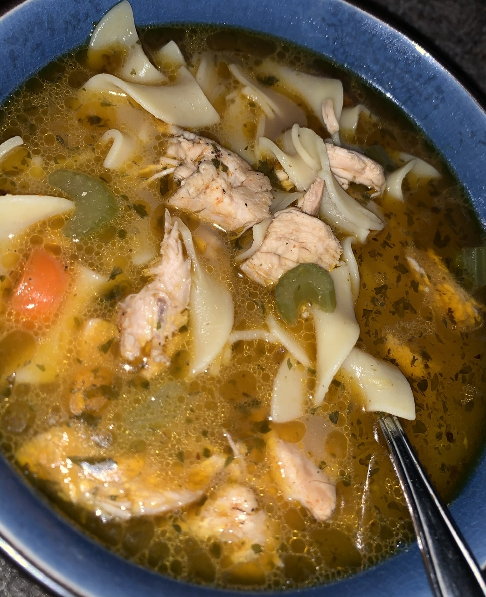

Chicken Soup
Go Home

Description
This soup is delicious, and very easy to make. It is a wonderful soup to
prepare for friends or neighbors that you would like to cook for.
Ingredients
- 4 cups chopped, cooked chicken meat
- 1 cup chopped celery
- ¼ cup chopped carrots
- ¼ cup chopped onion
- ¼ cup butter
- 8 ounces egg noodles
- 12 cups water
- 9 cubes chicken bouillon
- ½ teaspoon dried marjoram
- ½ teaspoon ground black pepper
- 1 bay leaf
- 1 tablespoon dried parsley
Steps
-
In a large stock pot, saute celery and onion in butter or margarine.
-
Add chicken, carrots, water, bouillon cubes, marjoram, black pepper, bay
leaf, and parsley. Simmer for 30 minutes.
- Add noodles, and simmer for 10 more minutes.